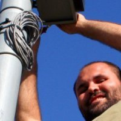

Open Makers Italy è un’associazione di promozione sociale costituita al fine di svolgere attività di utilità sociale a favore di associati o terzi, senza finalità di lucro. Lo scopo è quello di realizzare progetti innovativi in ambito tecnologico per lo sviluppo di modelli di business alternativi e sostenibili.
Trasforma il tuo smartphone in una piattaforma di monitoraggio delle wind farm intorno a te e nel mondo; Puoi vedere in tempo reale la produzione di energia dalle turbine eoliche su una mappa dettagliata. Grazie ad un preciso algoritmo puoi consultare un database che raccoglie la localizzazione di oltre di 12.000 impianti eolici dettagliati di caratteristiche tecniche delle turbine e una stima della produzione di energia.
Come intagliare il legno per creare lame con un profilo areodinamico accurato
Come costruire un alternatore che abbia una tensione specifica di uscita, che comprende la saldatura, la realizzazione degli avvolgimenti, e lavorare con forti magneti permanenti da inglobare in una colata di resina
Come utilizzare una smerigliatrice angolare, una saldatrice, un trapano trapano e tutto ciò che è necessario per la realizzazione del telaio della turbina
Una conoscenza pratica delle proprietà dei materiali
Intervalleremo alle sessioni pratiche, laboratori che esplorano la teoria alla base della progettazione di una turbina eolica e del suo funzionamento.
I nostri tecnici saranno sempre a disposizione per insegnare le abilità pratiche, guidare i corsisti attraverso la progettazione e rispondere in modo approfondito alle domande.
Ciò permetterà ai corsisti si costruire e montare ogni parte della turbina.
Dopo l’esperienza unica di completare, montare e collaudare una turbina, il corso è completato con l’installazione in campo, disegno e montaggio della torre, costruzione del sistema elettrico e del sistema di monitoraggio remoto.
è un docente di elettrotecnica ed ha tradotto in italiano i manuali di costruzione di Hugh Piggott, con cui ha frequenti contatti di scambio. Ha pubblicato sulla rivista Fare Elettronica molti articoli divulgativi, di cui alcuni sulle applicazioni delle energie rinnovabili. Ha guidato diversi corsi di autocostruzione di generatori microeolici, pioniere italiano di questa tipologia di progetti.

un giovane ingegnere specializzato in impianti eolici di medie e grandi dimensioni che opera come consulente indipendente. Si è molto interessato all’energia rinnovabile fin dall’università, dove ha animato il gruppo di Ingegneria senza Frontiere. Ha ricoperto ruoli rilevanti per tutte le fasi di un progetto eolico, dalla valutazione di fattibilità alla sua manutenzione, anche al fianco di produttori di turbine eoliche, sia in ambito nazionale che internazionale.